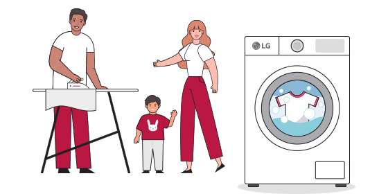
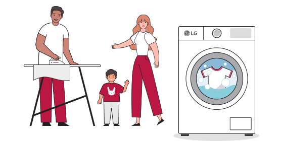
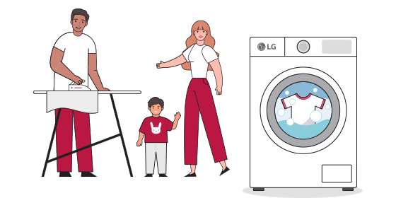
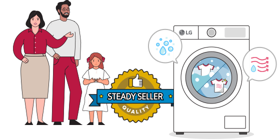
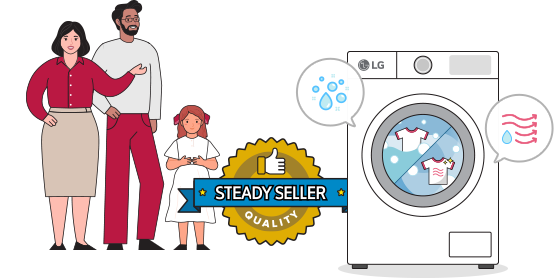
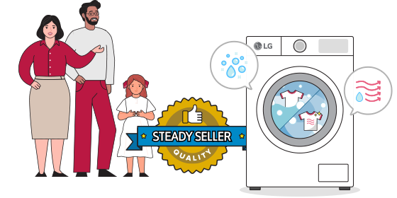

Washer Only
Like to keep it simple and reliable? This may be your perfect choice of washing machine
 


Classic in appearance and functionality, these efficiently execute the primary functions of a washing machine. Large-capacity machines have risen as the popular choice for households in recent years.
Washer and Dryer
This combined version is the most popular choice by far
 


You’re opting for a space-saving multi-player. Minimal in appearance, its functions present an all-in-one solution that makes it a frequent choice for the majority of households in markets like the UK.